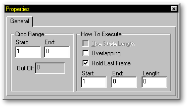

Clicking on an action in the Project Workspace offers several options for that
action on the Properties Panel. After clicking on an action, the Properties
Panel will look something like the following:
Clicking on an action in the Project Workspace offers several options for that
action on the Properties Panel. After clicking on an action, the Properties
Panel will look something like the following:

Action Properties
The Crop Range allows you to clip a section out of a longer action by entering values into the "Start" and "End" fields. The “Out Of” field shows the total number of frames in the selected action.
The How to Execute section on the Properties Panel allows you to select whether or not the selected action uses Stride Length (it must be created with Stride Length, otherwise, this option will remain ghosted), or Overlapping frame.
If the Action has a Stride Length associated with it, the check box on the dialog will indicate such. Simply click off the Stride Length indicator if you do not desire its effect. Be aware that when an Action has Stride Length, you must set “End Frame” for the duration you want the Action to occur. For example, a “Walk.act” without Stride Length will open with it’s default “Length” of perhaps “30”, which would be one step, then you would have to manually adjust this number to perhaps “18” to keep the Character from slipping on the Path, then add five more “Walk.act’s” (for a total of “90”), for the Character to do while moving along the Path. Alternatively, if “Walk.act” had a Stride Length, then you simply add it once and set “End Frame” to “90”, then the program will determine how many steps to take to keep the feet from slipping on the ground.
You want a list of Actions to overlap without hesitation, but the last frame of one Action is often the same as the first frame of the next Action so that they can flow smoothly into one another. However, when you watch the motion, you would notice a hesitation at each new step. Why? Because you are seeing the last frame of the previous Action and the first frame of the current Action together without any difference between the two. If you specify Overlapping, then this anomaly will not occur. Overlapping does not allow an Action to reach its final position on the last frame, but instead uses the first frame of the next Action.
Another use of Overlapping is:
There is no mathematical certainty that the path length and a character’s Stride Length will evenly match: in fact, they rarely exactly match. For example, a character’s Stride Length is “40”, and the path's length is “100”, therefore, the character can make 2 and 1/2 "Walk.act" cycles. The 1/2 step is a problem because it affects the Figure’s final position, subsequently preventing a smooth transition into the following Action. To alleviate this problem, the closest integral cycle count is used for the cycled Actions when Overlapping is enabled. For example, 2 and 1/2 cycles is rounded up to 3, whereas 2 and 1/3 cycles is rounded down to 2, limiting the Figure’s feet slipping to 1/2 cycle, which is usually unnoticeable.
The Hold Last Frame checkbox will allow your model to hold the position of the end frame of the last action applied for the duration of the animation. If you want your model to return to its default position, uncheck this box.
The “Start Frame” field allows you to specify when an action should occur in the course of your animation.
The “End Frame” field allows you to specify when an action should end in the course of your animation (or how long a Stride Length action is to be carried out).
The “Length” field allows entry or shows currently how many frames that the selected action will occur.
Other Advanced Action Topics:
Action Overloading
Move Frames
Flatten Object